South America · Brazil · Santa Catarina
Brazil: Florianópolis and Garopaba, February 2018
This is the last chapter of my South America trip. It covers seven days in the south of Brazil, after the flight from Uruguay on February 7: a lagoon and two beaches in Florianópolis on February 8, and then six days in Garopaba, a beach town about two hours south of Florianópolis by bus. I have 32 photos, one video and one selfie from these days, and I use 20 photos and one short video. I left out the ones that repeat the same view and the ones with people close to the camera, and I do not show the selfie. Where the photos show crowds, I made the faces too small or too blurred to recognize.
My conclusion up front: I did not plan Garopaba. I wanted to go to Praia do Rosa, I fell asleep on the bus, and I got off in Garopaba. I think I stayed there from February 9 to 14, which was the Carnival weekend, so many beaches were crowded and there was a stage with a band at night. I do not know the names of most of the beaches in my photos, and I say so each time. Google Photos only places my photos in "Florianópolis", "Garopaba" or "Brazil".
A note on times: the times in this chapter are the times in the file names of my photos, which is the clock of my phone. Google Photos shows the photos that I checked on February 8, 9 and 11 two hours later, with the label GMT-02:00. I did not check each photo of February 13. I write the phone clock.
- Florianópolis to Garopaba: about 2 hours by bus, with a price of about R$35 to R$52 and 4 daily trips from 06:30 to 18:15, according to two third-party sites. They disagree on the details, so check at the station.
- Garopaba to Praia do Rosa: about 20 minutes, a bus every two hours according to Rome2rio, which is a third-party estimate.
- Where I slept: I found no listing of Pousada da Beth, so I give no address and do not know if it still exists.
- Carnival: I did not find the 2018 program of Garopaba, or where my stage was.
The sources and the details are in the boxes below the story. These things change, so check before you go.
February 8: a lagoon and two beaches in Florianópolis
I flew to Brazil from Montevideo on February 7. I do not know where I landed or what time. My first photos in Brazil are from the late morning of February 8, by a lagoon in Florianópolis, and I think I got there by bus. I slept in the same hostel in which I had slept in January, which I think was called The Magic Monkey, as I wrote in the Iguazu chapter. I think the lagoon is the Lagoa da Conceição area, like the photos of January 24, but Google Photos only says "Florianópolis" for these, so I do not claim it.
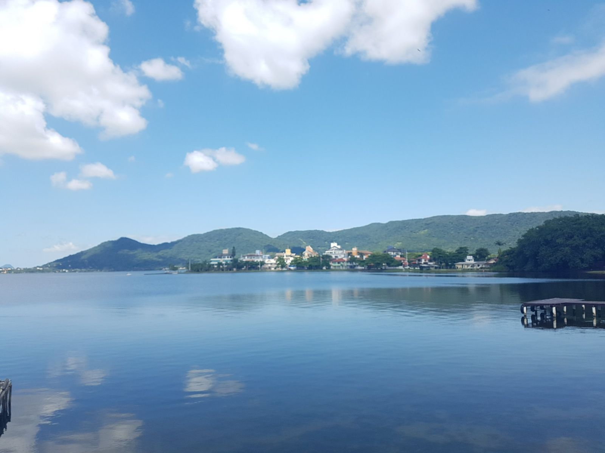
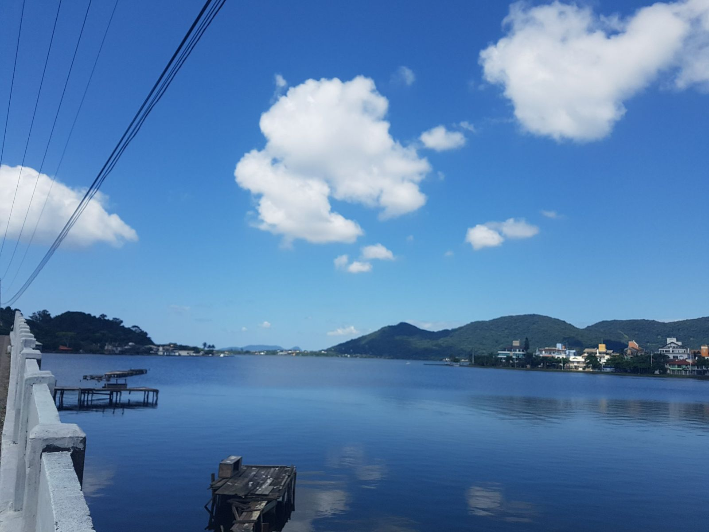
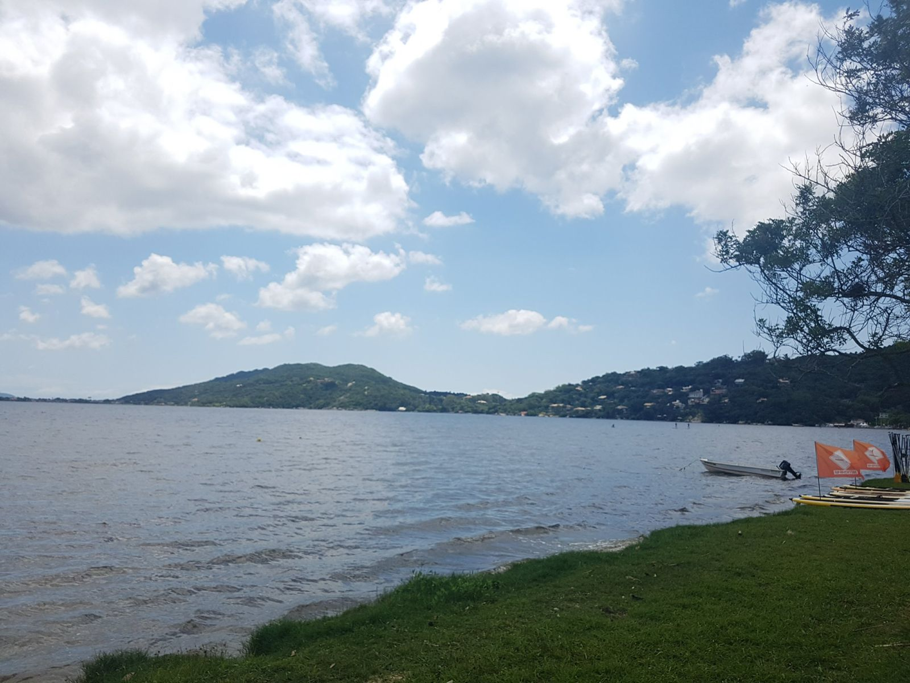
In the afternoon I went to the sea. I have two photos of crowded beaches, both at 13:34, and one of a beach with green water at 14:02. I do not know the names of these beaches, I do not know how I got there from the lagoon, and I do not know with whom I went, if anyone. As far as I remember I was alone. Google Photos places all of them only in Florianópolis.
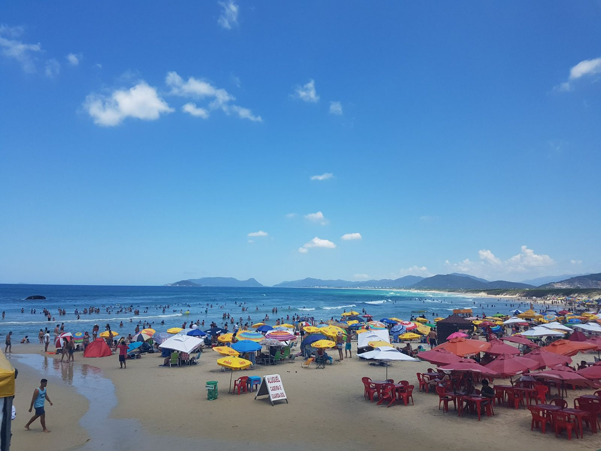
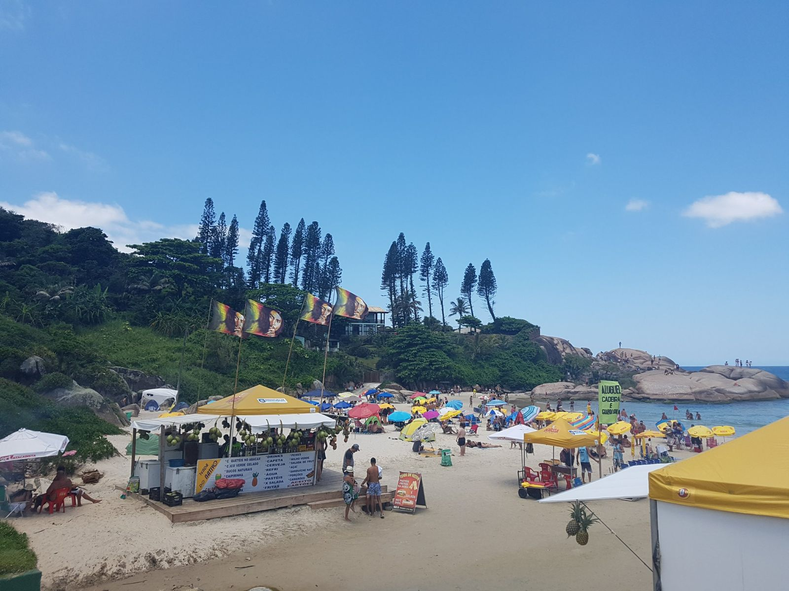
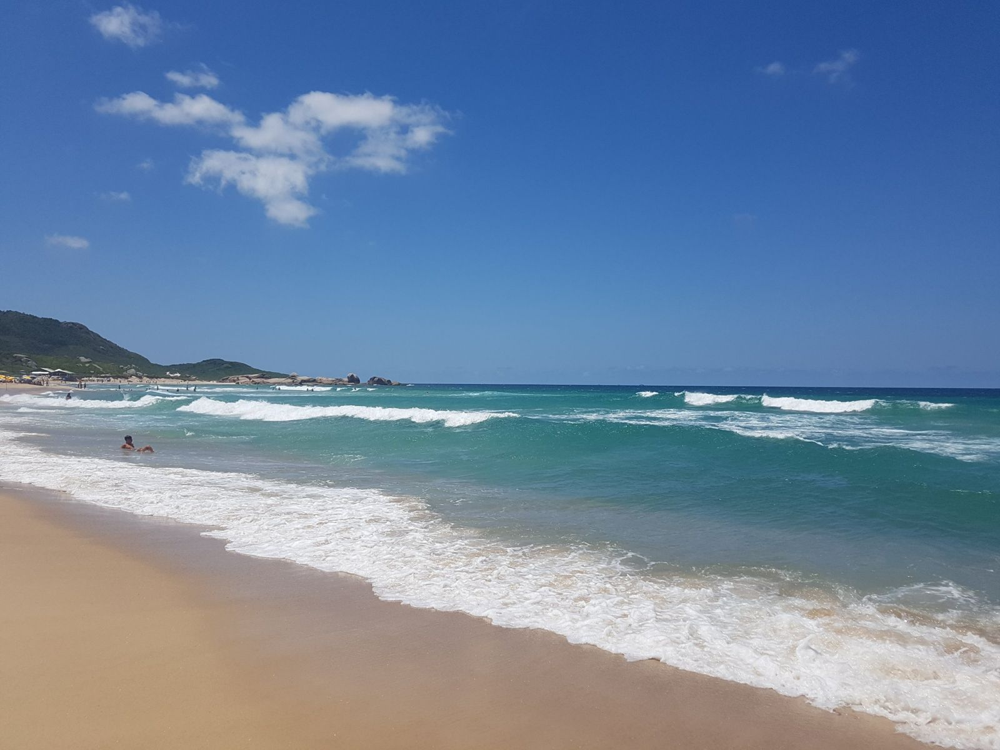
I do not remember what I ate, what I spent, or when I went back to the hostel. I do not have a photo from the evening of February 8.
February 9: I fell asleep on the bus and woke up in Garopaba
On February 9 I wanted to go to Praia do Rosa. I fell asleep on the bus, and I got off in Garopaba, which is about 15 km before Praia do Rosa on the road from Florianópolis. I do not remember the station, the bus company or the price. I do have one dated trace of it: a screenshot from Google Maps on my phone at 12:06, in which I searched for the beach of Siriú in Garopaba, so I was already in the area around noon.
What I found: The ticket site Buson lists the route Florianópolis to Garopaba at an average price of R$52, an average duration of 2 hours, 4 daily trips, the first at 06:30 and the last at 18:15. The Omio page for the opposite direction shows the company Santo Anjo, a fastest trip of 2 hours 5 minutes and prices from R$35.
What I did not find: the schedule, the company and the price of February 2018. The two sites do not agree on the number of trips and the price, and they are third-party sites, not the bus company. I also did not find which bus passes Praia do Rosa on the way, and I do not know if my bus was a direct one.
My first photos in Garopaba are from 12:42. Google Photos places three of them in Garopaba. They show a crowded beach with a small white church on a green hill at the end and many boats in the water. I think it is the beach by the town, but I did not check the name.
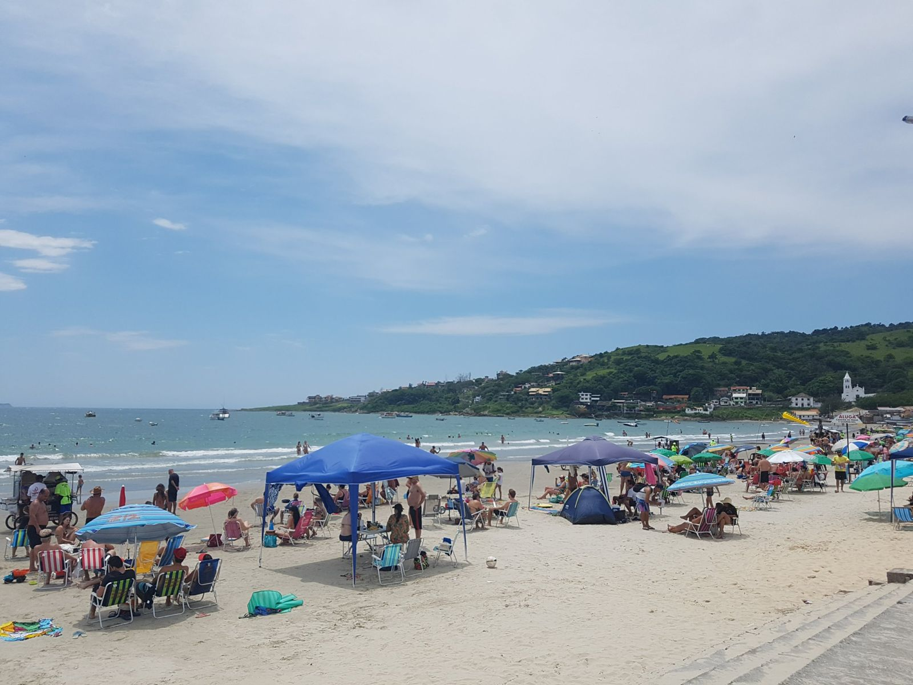
Between 13:33 and 13:43 I photographed two quieter beaches. In the first, a dune with grass on the right, signs that rent chairs and umbrellas, and a sign that rents kayaks and stand-up boards on a lagoon. In the second, a long beach with a steep green hill that ends in the sea, small houses at its foot and a stream that comes out on the sand. I searched for Siriú at 12:06, and the second beach fits that, but Google Photos only says Garopaba for the photos of that day, and I cannot say it is Siriú.
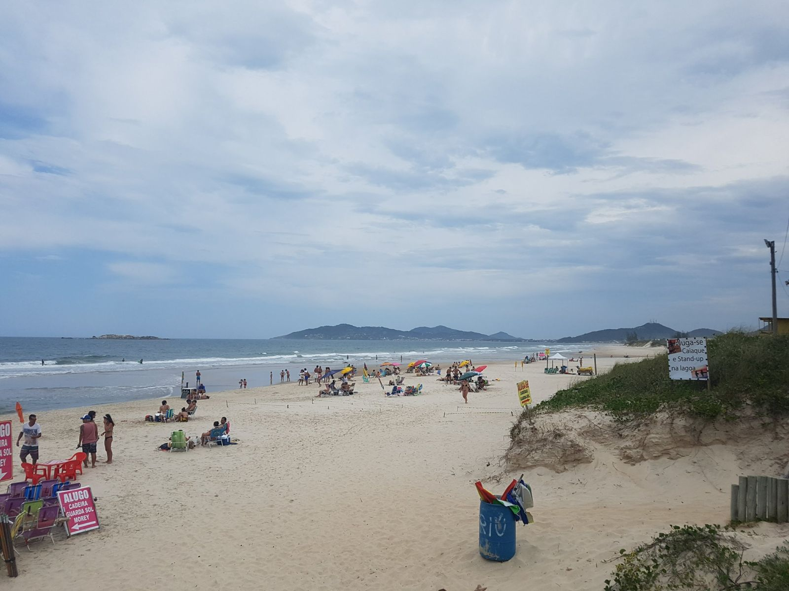
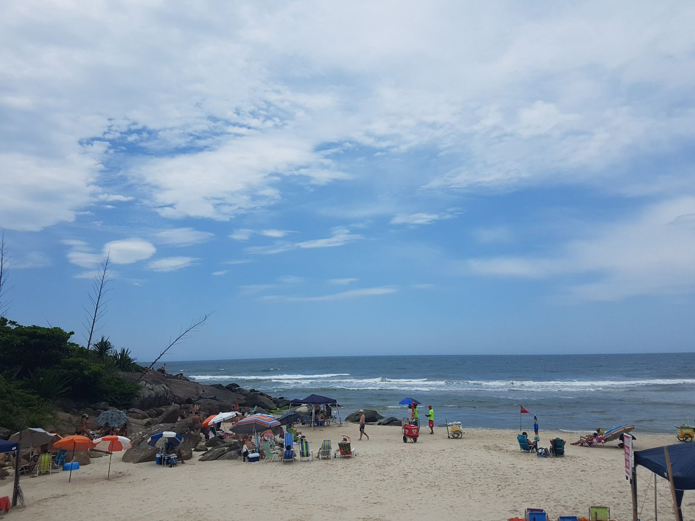
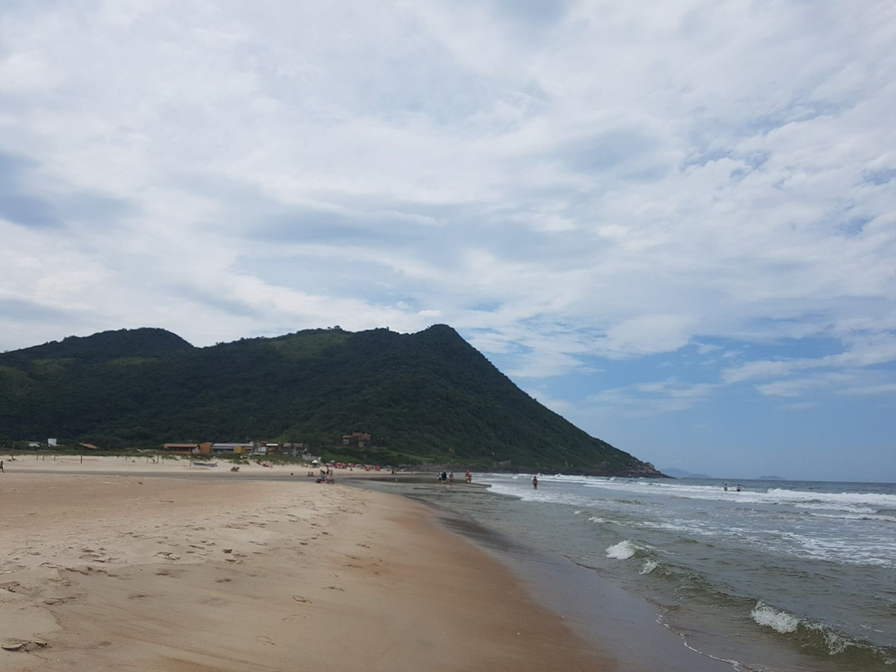
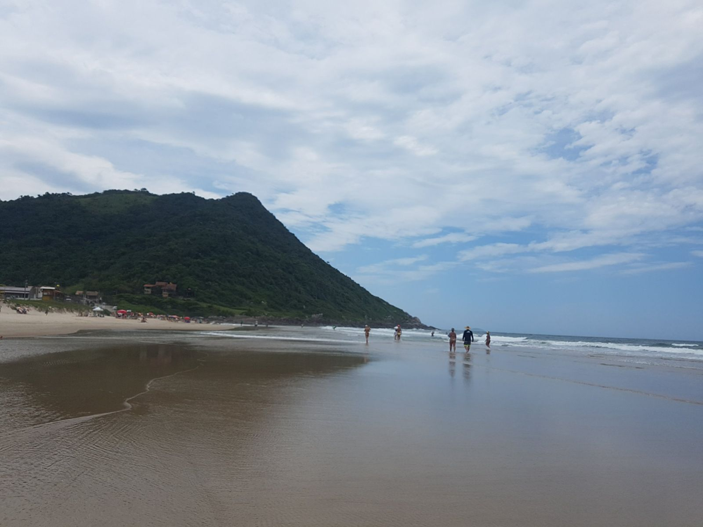
At 14:50 I photographed a paved road with cobblestones next to a green pasture, where two white cows were eating, and a mountain behind it with houses. It is the only photo I have of a road in Garopaba, and I do not know its name.
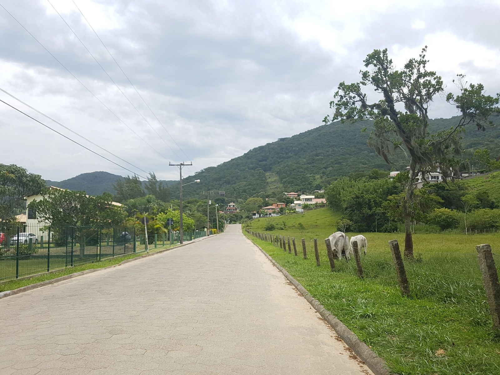
What I found: I searched in November 2026 for "Pousada da Beth Garopaba" and for hostels in Garopaba, and the results were other places with similar names.
What I did not find: any listing of a place called Pousada da Beth, an address, or a price. It may have closed or changed its name, or I may remember the name wrongly. I do not give an address.
I think I slept in a hostel called Pousada da Beth, from February 9 to the day I left. I do not remember the price, the room or how many nights I paid for, and I cannot say that the name is right. I found no listing under that name.
The Carnival weekend and the stage
February 9, 2018 was the Friday on which the Carnival weekend started. At night, at 23:42, I filmed a band on a big metal stage in the street, with a crowd in front of it, and at 01:23 on February 10 I took a photo of the same stage. Some people in the crowd wear yellow vests with the word "Carnaval" on them. I do not know where in Garopaba the stage was, who was playing, or if it was free. I show 12 seconds of the video, without the sound, and I blurred the crowd at the bottom of the picture.
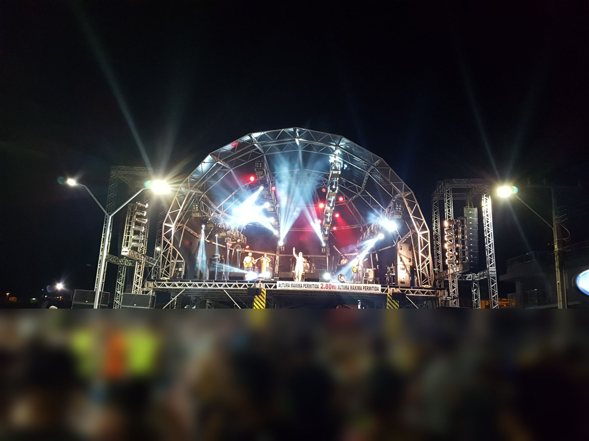
I heard "Hear Me Now" by Alok and Bruno Martini almost everywhere in Brazil (about the song, released in October 2016). I do not remember if it was played at this stage.
What I found: A festival schedule in Santa Catarina, Psicodália, begins on Friday, February 9, 2018, "throughout Carnaval 2018", which fits the date of my stage. A regional news article says that in Carnival 2025 an arena of the "Conexão Verão" tour was set on the sand of Praia da Ferrugem in Garopaba from Thursday, February 27, to Sunday, March 2, so Ferrugem is a place for Carnival events in Garopaba, at least in some years.
What I did not find: the Carnival program of Garopaba in 2018, the place of my stage, who played, and whether the town or a private organizer ran it. I do not say that my stage was on Ferrugem beach.
February 10 and 12
I have no photos from February 10 after the stage, or from February 12. I do not remember what I did on those days.
February 11: probably Praia do Rosa
On February 11 I have four photos, from 15:09 to 16:06. Google Photos labels them only "Brazil", with no place. When I search my library for "Praia do Rosa", it returns one of them, the long beach with people (15:09), and for "Imbituba", which is the municipality of Praia do Rosa, it returns another one. So I think I finally went to Praia do Rosa on this day, but I do not remember going, and I do not know how I got there. I show three of the four photos, from the lookout and from the beach.
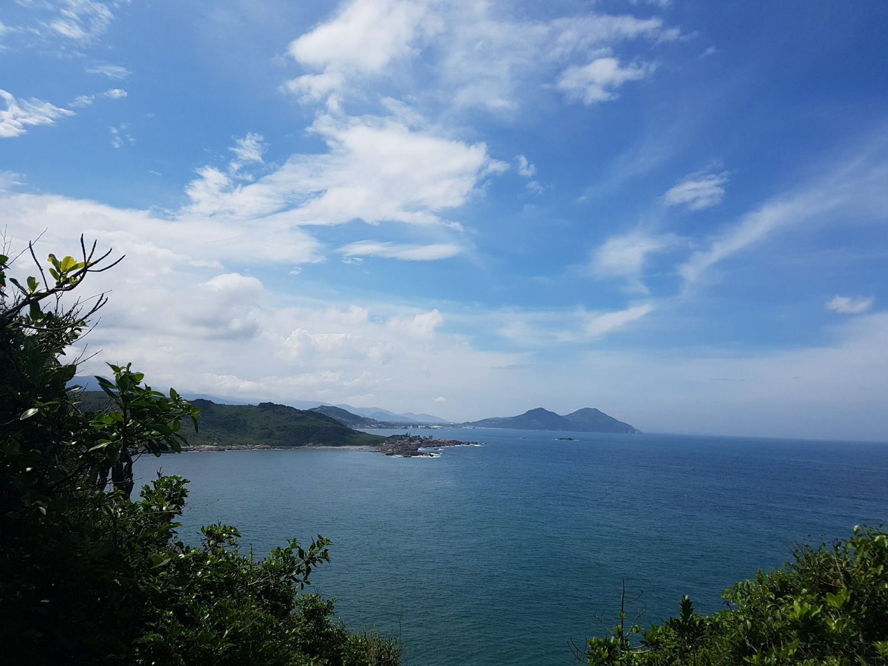
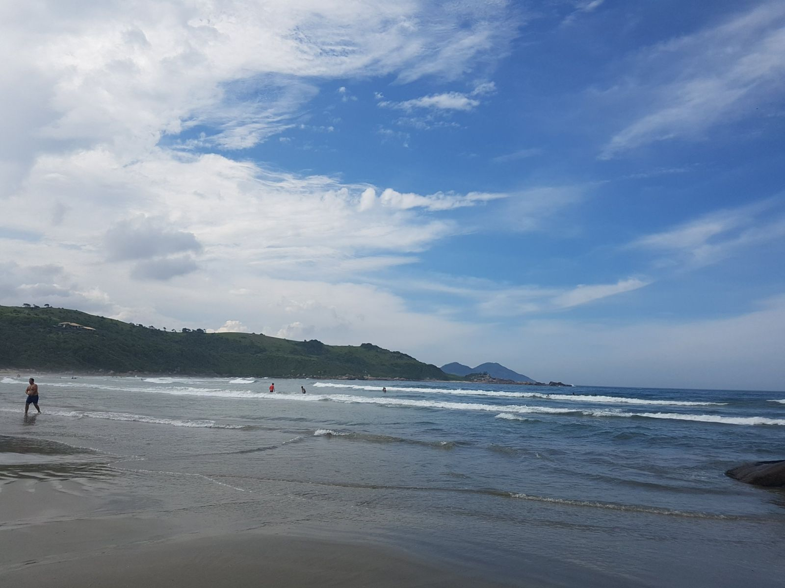
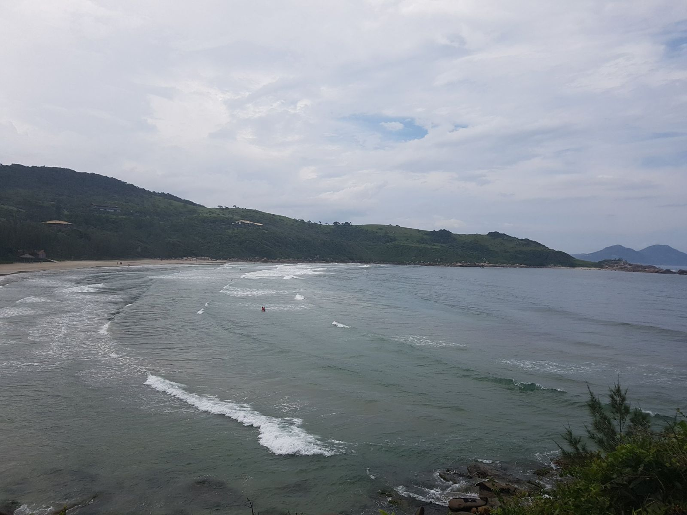
What I found: The route planner Rome2rio says that the bus between Garopaba and Praia do Rosa is operated by Expresso Garopaba, takes about 20 minutes and leaves every two hours, and that the drive is 15 km. A travel blog says that Praia da Ferrugem in Garopaba is about 95 km from Florianópolis, 18 km from Praia do Rosa and 7 km from the town beach of Garopaba.
What I did not find: the bus schedule of 2018 and the fare, and which bus I took on February 11. The Rome2rio page is a third-party estimate.
February 13: a beach in the evening
On February 13 I have seven photos, from 17:49 to 18:13. Google Photos places them in Garopaba. They show a long beach in the evening, a viewpoint on the rocks over a wide bay with a crowd under umbrellas at the end of it, a river mouth between two hills and groups of people who play with a ball in the water. I do not know the name of the beach. I use four, and I left out the three where people who play are close to the camera.
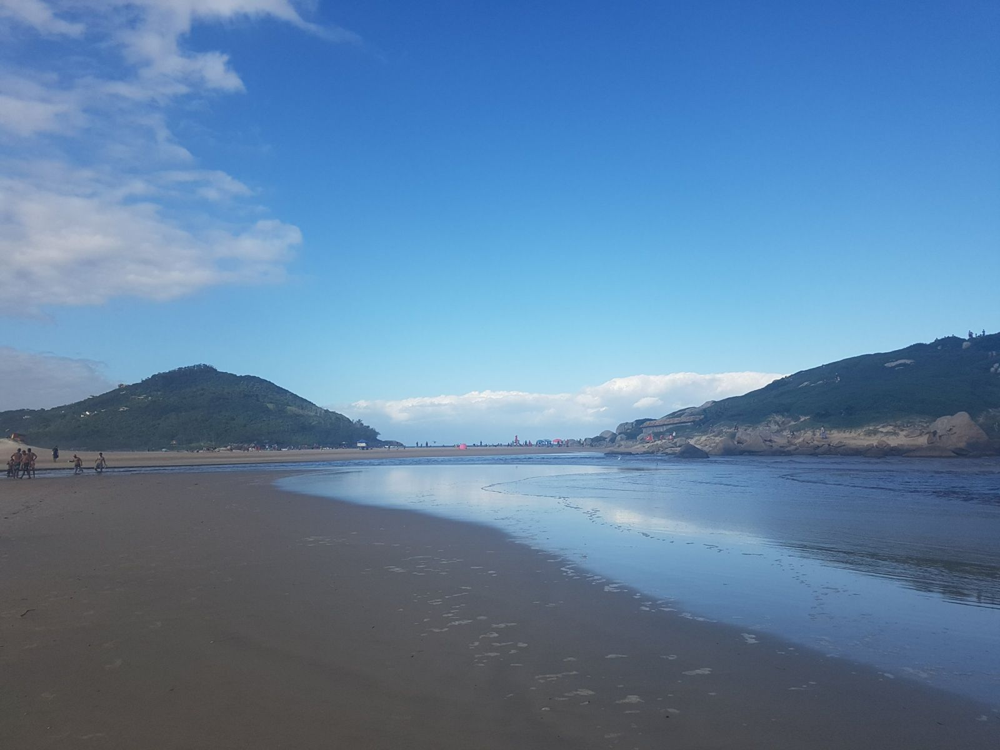
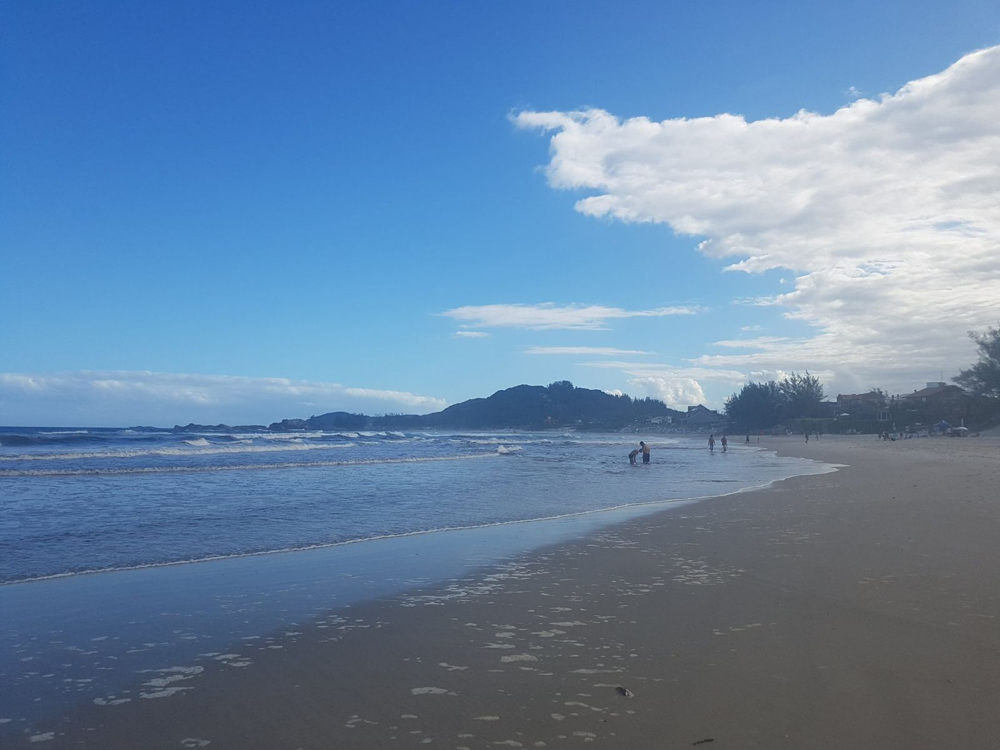
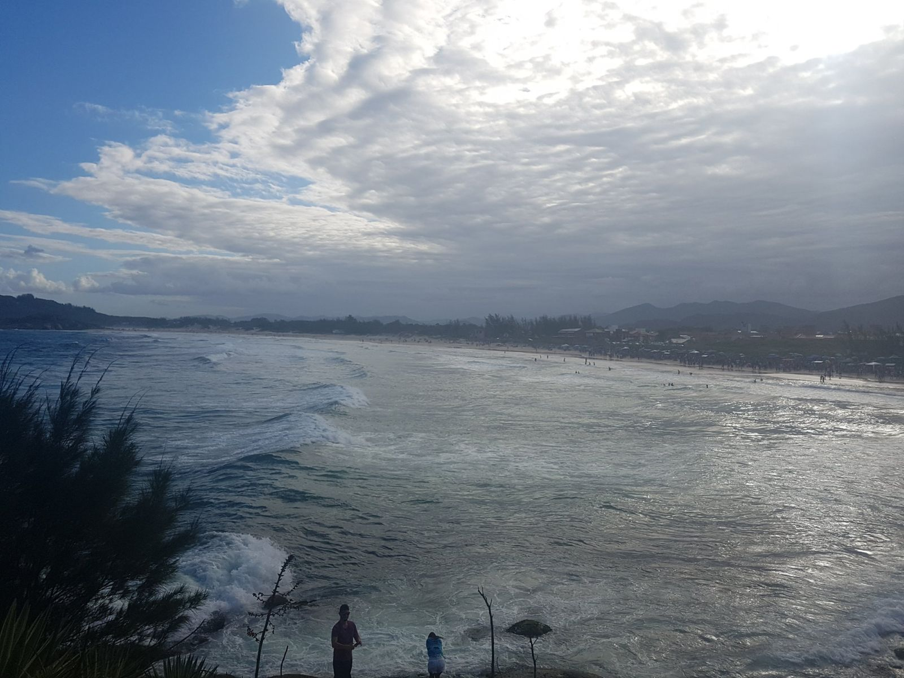
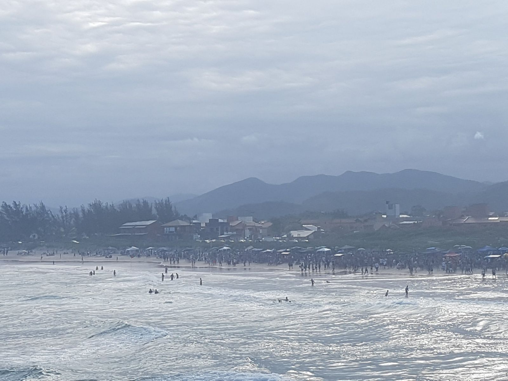
February 14: the end of the trip
My last photo of the trip is a selfie from 18:50 on February 14, which I think I took near the hostel, on a street in Garopaba. I do not show it. After this I left Garopaba, and this was the end of my trip in South America. I do not remember how I left: where I went, which bus or flight I took, or from which airport I left the country. I have no photo of the way out.
What I do not remember
I do not remember what time I landed in Brazil on February 7, how I got from the airport to the lagoon, the names of the beaches on February 8, the bus company, the station and the price from Florianópolis to Garopaba, the exact name of the hostel in Garopaba or what I paid, what the stage was, how I got to Praia do Rosa, what I did on February 10 and 12, and how I left Brazil.